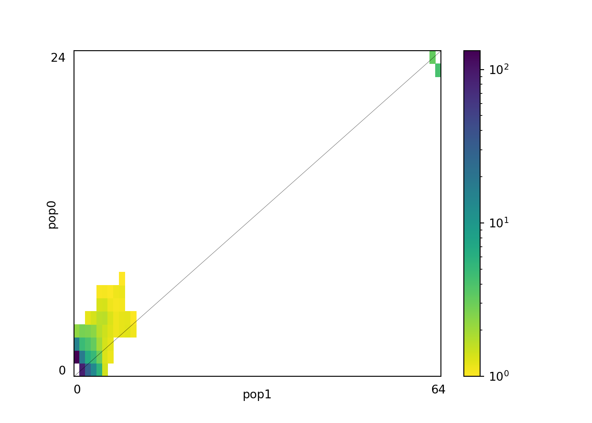
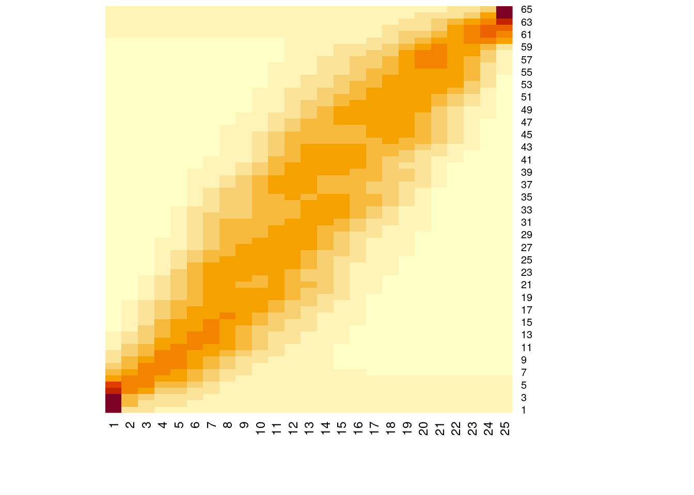
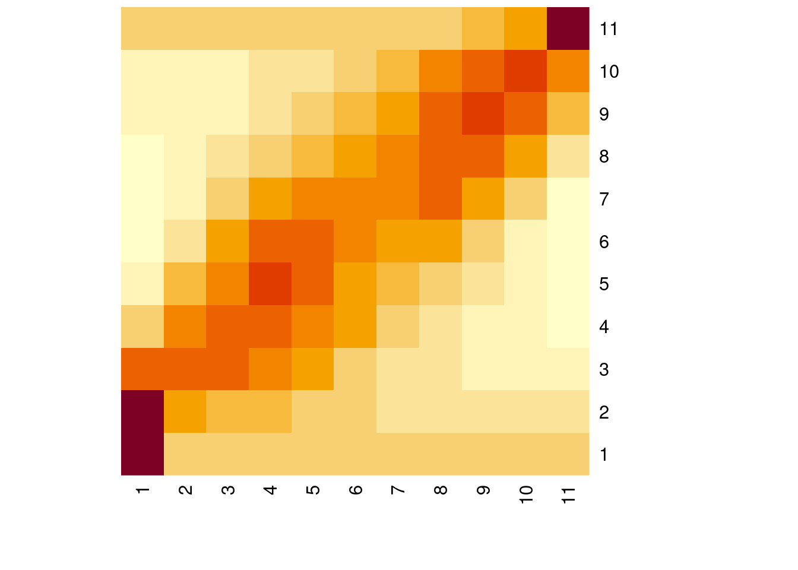
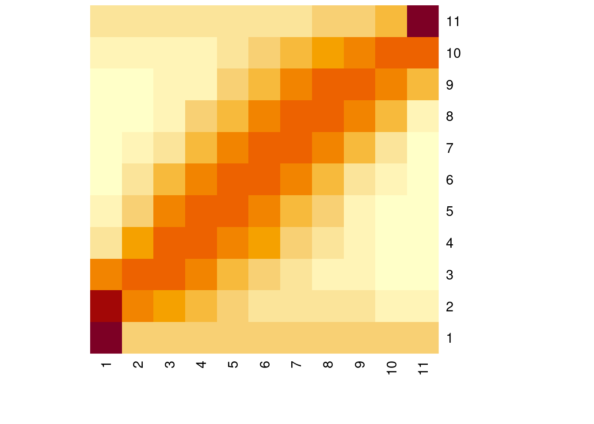
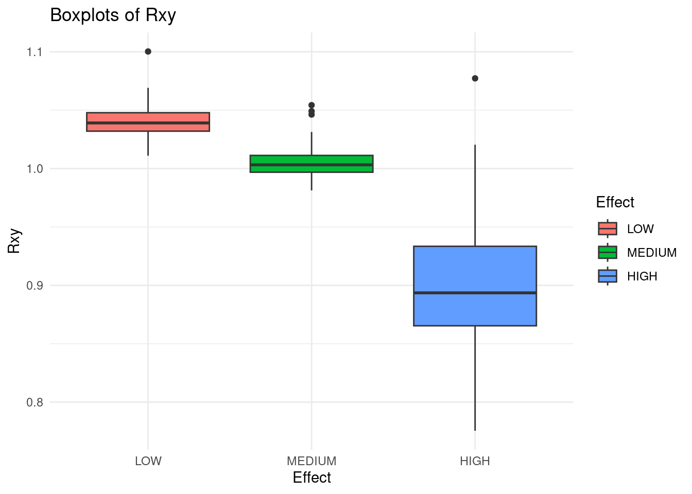
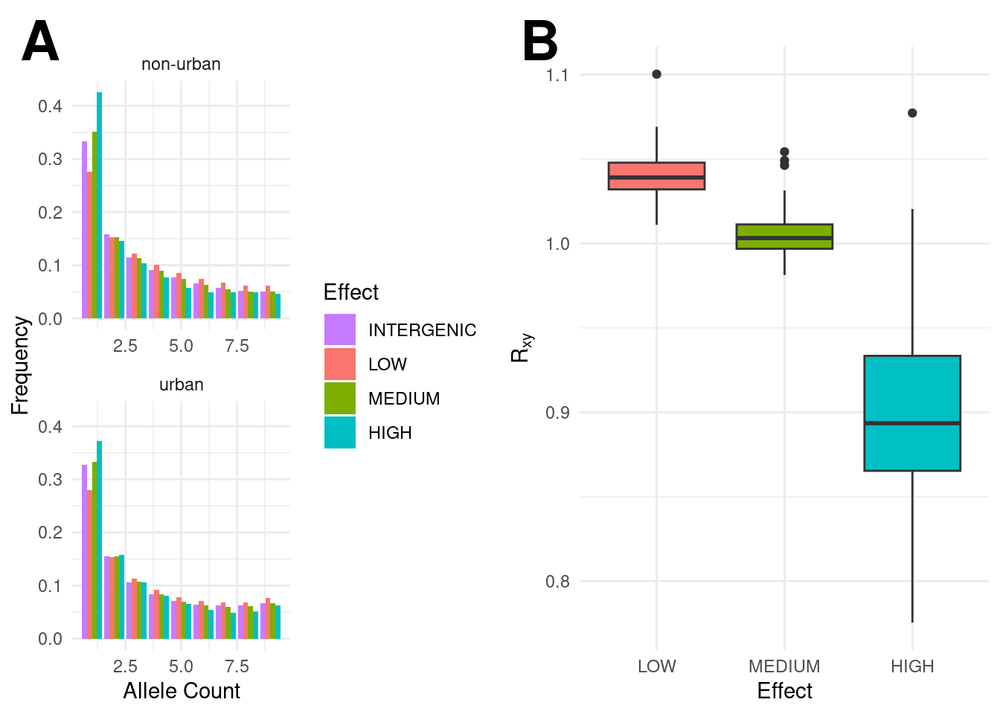

for input_file in Spectra/*ml
#for input_file in Spectra/Bootstraps_no_block/*ml #no block bootstrap.
do
echo "37 99 unfolded" | cat - "$input_file" > temp && mv temp "$input_file"
doneMutation_load
Examining spectra and mutation load
We now look at Rxy, which allows us to directly compare the two populations and may be more efficient at direct comparisons. We project spectra down (with dadi) to alleviate the issue of missing data. See also https://github.com/samarth8392/MQU_EvoGenomics
library(reticulate)
use_python("/home/yannbourgeois/mambaforge/bin/python3")We applied a threshold for missing individuals of 32/49 (urban) and 12/18 (countryside). So we can project to 64 and 24. We can also project down even more to provide a clearer contrast for the SFS.
import dadi
import glob
import os
# Directory containing the files
directory = 'Spectra'
#directory = 'Spectra/Bootstraps_no_block'
# Loop over all files in the directory that match a pattern (e.g., all .txt files)
for file_path in glob.glob(os.path.join(directory, '*ml')):
if os.path.isfile(file_path):
print(f"Processing file: {os.path.basename(file_path)}")
# Add your code here to process the file
fs = dadi.Spectrum.from_file(file_path) ###ml file but with a dadi header
fs2=fs.project([10,10])
#fs2=fs.fold()
fs3=fs.project([24,64])
#fs2.to_file("folded_spectrum.sfs")
fs3.to_file(f"projected_{os.path.basename(file_path)}")
fs2.to_file(f"projected_small_{os.path.basename(file_path)}")Processing file: country_urban_LOW_boot_6.ml
Processing file: country_urban_HIGH_boot_40.ml
Processing file: country_urban_LOW_boot_47.ml
Processing file: country_urban_MEDIUM.ml
Processing file: country_urban_LOW_boot_35.ml
Processing file: country_urban_MEDIUM_boot_48.ml
Processing file: country_urban_LOW_boot_73.ml
Processing file: country_urban_LOW_boot_15.ml
Processing file: country_urban_HIGH_boot_60.ml
Processing file: country_urban_LOW_boot_53.ml
Processing file: country_urban_MEDIUM_boot_84.ml
Processing file: country_urban_LOW_boot_17.ml
Processing file: country_urban_LOW_boot_30.ml
Processing file: country_urban_HIGH_boot_99.ml
Processing file: country_urban_MEDIUM_boot_97.ml
Processing file: country_urban_LOW_boot_26.ml
Processing file: country_urban_HIGH_boot_67.ml
Processing file: country_urban_MEDIUM_boot_71.ml
Processing file: country_urban_LOW_boot_51.ml
Processing file: country_urban_HIGH_boot_52.ml
Processing file: country_urban_LOW_boot_77.ml
Processing file: country_urban_HIGH_boot_11.ml
Processing file: country_urban_LOW_boot_82.ml
Processing file: country_urban_HIGH_boot_47.ml
Processing file: country_urban_MEDIUM_boot_86.ml
Processing file: country_urban_HIGH_boot_84.ml
Processing file: country_urban_MEDIUM_boot_98.ml
Processing file: country_urban_LOW_boot_69.ml
Processing file: country_urban_HIGH_boot_28.ml
Processing file: country_urban_MEDIUM_boot_91.ml
Processing file: country_urban_MEDIUM_boot_93.ml
Processing file: country_urban_LOW_boot_25.ml
Processing file: country_urban_HIGH_boot_13.ml
Processing file: country_urban_HIGH_boot_86.ml
Processing file: country_urban_MEDIUM_boot_53.ml
Processing file: country_urban_HIGH_boot_80.ml
Processing file: country_urban_MEDIUM_boot_19.ml
Processing file: country_urban_HIGH_boot_100.ml
Processing file: country_urban_LOW_boot_39.ml
Processing file: country_urban_LOW_boot_22.ml
Processing file: country_urban_HIGH_boot_64.ml
Processing file: country_urban_LOW_boot_18.ml
Processing file: country_urban_LOW_boot_78.ml
Processing file: country_urban_LOW_boot_81.ml
Processing file: country_urban_HIGH_boot_16.ml
Processing file: country_urban_MEDIUM_boot_80.ml
Processing file: country_urban_LOW_boot_21.ml
Processing file: country_urban_MEDIUM_boot_82.ml
Processing file: country_urban_MEDIUM_boot_11.ml
Processing file: country_urban_LOW_boot_38.ml
Processing file: country_urban_HIGH_boot_7.ml
Processing file: country_urban_MEDIUM_boot_61.ml
Processing file: country_urban_LOW_boot_32.ml
Processing file: country_urban_LOW_boot_13.ml
Processing file: country_urban_LOW_boot_42.ml
Processing file: country_urban_HIGH_boot_48.ml
Processing file: country_urban_HIGH_boot_29.ml
Processing file: country_urban_HIGH_boot_59.ml
Processing file: country_urban_MEDIUM_boot_92.ml
Processing file: country_urban_LOW_boot_90.ml
Processing file: country_urban_HIGH_boot_20.ml
Processing file: country_urban_HIGH_boot_31.ml
Processing file: country_urban_MEDIUM_boot_28.ml
Processing file: country_urban_MEDIUM_boot_67.ml
Processing file: country_urban_MEDIUM_boot_3.ml
Processing file: country_urban_MEDIUM_boot_78.ml
Processing file: country_urban_LOW_boot_23.ml
Processing file: country_urban_MEDIUM_boot_23.ml
Processing file: country_urban_HIGH_boot_39.ml
Processing file: country_urban_MEDIUM_boot_37.ml
Processing file: country_urban_MEDIUM_boot_75.ml
Processing file: country_urban_LOW_boot_58.ml
Processing file: country_urban_MEDIUM_boot_50.ml
Processing file: country_urban_HIGH_boot_10.ml
Processing file: country_urban_MEDIUM_boot_76.ml
Processing file: country_urban_HIGH_boot_76.ml
Processing file: country_urban_MEDIUM_boot_26.ml
Processing file: country_urban_HIGH_boot_37.ml
Processing file: country_urban_MEDIUM_boot_9.ml
Processing file: country_urban_LOW_boot_19.ml
Processing file: country_urban_LOW_boot_20.ml
Processing file: country_urban_MEDIUM_boot_16.ml
Processing file: country_urban_LOW_boot_66.ml
Processing file: country_urban_LOW_boot_83.ml
Processing file: country_urban_LOW_boot_5.ml
Processing file: country_urban_MEDIUM_boot_68.ml
Processing file: country_urban_MEDIUM_boot_83.ml
Processing file: country_urban_LOW_boot_43.ml
Processing file: country_urban_HIGH_boot_89.ml
Processing file: country_urban_MEDIUM_boot_87.ml
Processing file: country_urban_LOW_boot_86.ml
Processing file: country_urban_MEDIUM_boot_94.ml
Processing file: country_urban_LOW_boot_50.ml
Processing file: country_urban_MEDIUM_boot_69.ml
Processing file: country_urban_MEDIUM_boot_63.ml
Processing file: country_urban_MEDIUM_boot_46.ml
Processing file: country_urban_HIGH_boot_17.ml
Processing file: country_urban_MEDIUM_boot_62.ml
Processing file: country_urban_LOW_boot_11.ml
Processing file: country_urban_MEDIUM_boot_45.ml
Processing file: country_urban_MEDIUM_boot_18.ml
Processing file: country_urban_MEDIUM_boot_31.ml
Processing file: country_urban_LOW_boot_41.ml
Processing file: country_urban_LOW_boot_65.ml
Processing file: country_urban_LOW_boot_44.ml
Processing file: country_urban_HIGH_boot_65.ml
Processing file: country_urban_LOW_boot_85.ml
Processing file: country_urban_HIGH_boot_8.ml
Processing file: country_urban_HIGH_boot_63.ml
Processing file: country_urban_HIGH_boot_41.ml
Processing file: country_urban_MEDIUM_boot_21.ml
Processing file: country_urban_LOW_boot_99.ml
Processing file: country_urban_LOW_boot_79.ml
Processing file: country_urban_HIGH_boot_4.ml
Processing file: country_urban_HIGH_boot_27.ml
Processing file: country_urban_MEDIUM_boot_7.ml
Processing file: country_urban_LOW_boot_68.ml
Processing file: country_urban_LOW_boot_48.ml
Processing file: country_urban_MEDIUM_boot_57.ml
Processing file: country_urban_HIGH_boot_53.ml
Processing file: country_urban_MEDIUM_boot_33.ml
Processing file: country_urban_HIGH_boot_54.ml
Processing file: country_urban_LOW_boot_16.ml
Processing file: country_urban_HIGH_boot_42.ml
Processing file: country_urban_MEDIUM_boot_8.ml
Processing file: country_urban_HIGH_boot_87.ml
Processing file: country_urban_MEDIUM_boot_55.ml
Processing file: country_urban_MEDIUM_boot_44.ml
Processing file: country_urban_HIGH_boot_46.ml
Processing file: country_urban_LOW_boot_3.ml
Processing file: country_urban_LOW_boot_31.ml
Processing file: country_urban_MEDIUM_boot_24.ml
Processing file: country_urban_MEDIUM_boot_81.ml
Processing file: country_urban_MEDIUM_boot_73.ml
Processing file: country_urban_MEDIUM_boot_2.ml
Processing file: country_urban_HIGH_boot_62.ml
Processing file: country_urban_LOW_boot_8.ml
Processing file: country_urban_LOW_boot_92.ml
Processing file: country_urban_MEDIUM_boot_22.ml
Processing file: country_urban_HIGH_boot_19.ml
Processing file: country_urban_MEDIUM_boot_20.ml
Processing file: country_urban_HIGH_boot_68.ml
Processing file: country_urban_HIGH_boot_81.ml
Processing file: country_urban_HIGH_boot_43.ml
Processing file: country_urban_HIGH_boot_72.ml
Processing file: country_urban_LOW_boot_12.ml
Processing file: country_urban_LOW_boot_33.ml
Processing file: country_urban_HIGH_boot_18.ml
Processing file: country_urban_HIGH_boot_66.ml
Processing file: country_urban_LOW_boot_76.ml
Processing file: country_urban_MEDIUM_boot_65.ml
Processing file: country_urban_HIGH_boot_69.ml
Processing file: country_urban_HIGH_boot_55.ml
Processing file: country_urban_MEDIUM_boot_47.ml
Processing file: country_urban_LOW_boot_10.ml
Processing file: country_urban_MEDIUM_boot_41.ml
Processing file: country_urban_HIGH_boot_36.ml
Processing file: country_urban_MEDIUM_boot_13.ml
Processing file: country_urban_LOW_boot_71.ml
Processing file: country_urban_MEDIUM_boot_14.ml
Processing file: country_urban_HIGH_boot_92.ml
Processing file: country_urban_LOW_boot_70.ml
Processing file: country_urban_LOW_boot_9.ml
Processing file: country_urban_MEDIUM_boot_42.ml
Processing file: country_urban_MEDIUM_boot_15.ml
Processing file: country_urban_MEDIUM_boot_58.ml
Processing file: country_urban_LOW_boot_67.ml
Processing file: country_urban_LOW_boot_37.ml
Processing file: country_urban_HIGH_boot_58.ml
Processing file: country_urban_HIGH_boot_45.ml
Processing file: country_urban_HIGH.ml
Processing file: country_urban_HIGH_boot_83.ml
Processing file: country_urban_MEDIUM_boot_96.ml
Processing file: country_urban_HIGH_boot_91.ml
Processing file: country_urban_MEDIUM_boot_66.ml
Processing file: country_urban_LOW_boot_98.ml
Processing file: country_urban_INTERGENIC.ml
Processing file: country_urban_MEDIUM_boot_1.ml
Processing file: country_urban_LOW_boot_36.ml
Processing file: country_urban_HIGH_boot_3.ml
Processing file: country_urban_MEDIUM_boot_6.ml
Processing file: country_urban_HIGH_boot_97.ml
Processing file: country_urban_LOW_boot_54.ml
Processing file: country_urban_LOW_boot_52.ml
Processing file: country_urban_MEDIUM_boot_99.ml
Processing file: country_urban_HIGH_boot_2.ml
Processing file: country_urban_MEDIUM_boot_79.ml
Processing file: country_urban_HIGH_boot_9.ml
Processing file: country_urban_HIGH_boot_56.ml
Processing file: country_urban_LOW_boot_95.ml
Processing file: country_urban_MEDIUM_boot_25.ml
Processing file: country_urban_HIGH_boot_1.ml
Processing file: country_urban_MEDIUM_boot_89.ml
Processing file: country_urban_HIGH_boot_32.ml
Processing file: country_urban_LOW_boot_59.ml
Processing file: country_urban_HIGH_boot_6.ml
Processing file: country_urban_LOW_boot_72.ml
Processing file: country_urban_HIGH_boot_21.ml
Processing file: country_urban_HIGH_boot_77.ml
Processing file: country_urban_MEDIUM_boot_40.ml
Processing file: country_urban_LOW_boot_14.ml
Processing file: country_urban_HIGH_boot_93.ml
Processing file: country_urban_HIGH_boot_44.ml
Processing file: country_urban_HIGH_boot_22.ml
Processing file: country_urban_HIGH_boot_74.ml
Processing file: country_urban_MEDIUM_boot_5.ml
Processing file: country_urban_HIGH_boot_14.ml
Processing file: country_urban_MEDIUM_boot_12.ml
Processing file: country_urban_MEDIUM_boot_34.ml
Processing file: country_urban_LOW_boot_100.ml
Processing file: country_urban_MEDIUM_boot_4.ml
Processing file: country_urban_MEDIUM_boot_36.ml
Processing file: country_urban_LOW_boot_49.ml
Processing file: country_urban_HIGH_boot_88.ml
Processing file: country_urban_MEDIUM_boot_70.ml
Processing file: country_urban_LOW_boot_63.ml
Processing file: country_urban_LOW_boot_29.ml
Processing file: country_urban_LOW_boot_27.ml
Processing file: country_urban_MEDIUM_boot_35.ml
Processing file: country_urban_LOW_boot_7.ml
Processing file: country_urban_HIGH_boot_50.ml
Processing file: country_urban_HIGH_boot_49.ml
Processing file: country_urban_MEDIUM_boot_29.ml
Processing file: country_urban_MEDIUM_boot_38.ml
Processing file: country_urban_HIGH_boot_70.ml
Processing file: country_urban_HIGH_boot_82.ml
Processing file: country_urban_HIGH_boot_51.ml
Processing file: country_urban_LOW_boot_34.ml
Processing file: country_urban_LOW_boot_80.ml
Processing file: country_urban_MEDIUM_boot_52.ml
Processing file: country_urban_HIGH_boot_26.ml
Processing file: country_urban_HIGH_boot_79.ml
Processing file: country_urban_HIGH_boot_35.ml
Processing file: country_urban_LOW_boot_87.ml
Processing file: country_urban_MEDIUM_boot_39.ml
Processing file: country_urban_LOW_boot_64.ml
Processing file: country_urban_MEDIUM_boot_60.ml
Processing file: country_urban_LOW_boot_93.ml
Processing file: country_urban_LOW_boot_28.ml
Processing file: country_urban_MEDIUM_boot_10.ml
Processing file: country_urban_MEDIUM_boot_72.ml
Processing file: country_urban_LOW_boot_56.ml
Processing file: country_urban_MEDIUM_boot_49.ml
Processing file: country_urban_HIGH_boot_61.ml
Processing file: country_urban_MEDIUM_boot_17.ml
Processing file: country_urban_MEDIUM_boot_56.ml
Processing file: country_urban_LOW_boot_89.ml
Processing file: country_urban_HIGH_boot_15.ml
Processing file: country_urban_HIGH_boot_57.ml
Processing file: country_urban_HIGH_boot_94.ml
Processing file: country_urban_HIGH_boot_73.ml
Processing file: country_urban_LOW_boot_75.ml
Processing file: country_urban_HIGH_boot_33.ml
Processing file: country_urban_LOW.ml
Processing file: country_urban_HIGH_boot_30.ml
Processing file: country_urban_LOW_boot_91.ml
Processing file: country_urban_HIGH_boot_5.ml
Processing file: country_urban_HIGH_boot_38.ml
Processing file: country_urban_MEDIUM_boot_64.ml
Processing file: country_urban_HIGH_boot_96.ml
Processing file: country_urban_MEDIUM_boot_90.ml
Processing file: country_urban_MEDIUM_boot_43.ml
Processing file: country_urban_LOW_boot_2.ml
Processing file: country_urban_MEDIUM_boot_59.ml
Processing file: country_urban_LOW_boot_57.ml
Processing file: country_urban_LOW_boot_94.ml
Processing file: country_urban_LOW_boot_46.ml
Processing file: country_urban_HIGH_boot_90.ml
Processing file: country_urban_MEDIUM_boot_85.ml
Processing file: country_urban_LOW_boot_40.ml
Processing file: country_urban_LOW_boot_61.ml
Processing file: country_urban_LOW_boot_24.ml
Processing file: country_urban_HIGH_boot_34.ml
Processing file: country_urban_HIGH_boot_25.ml
Processing file: country_urban_MEDIUM_boot_51.ml
Processing file: country_urban_LOW_boot_97.ml
Processing file: country_urban_LOW_boot_84.ml
Processing file: country_urban_LOW_boot_60.ml
Processing file: country_urban_HIGH_boot_71.ml
Processing file: country_urban_HIGH_boot_12.ml
Processing file: country_urban_MEDIUM_boot_32.ml
Processing file: country_urban_MEDIUM_boot_100.ml
Processing file: country_urban_HIGH_boot_95.ml
Processing file: country_urban_LOW_boot_45.ml
Processing file: country_urban_MEDIUM_boot_77.ml
Processing file: country_urban_MEDIUM_boot_74.ml
Processing file: country_urban_LOW_boot_96.ml
Processing file: country_urban_MEDIUM_boot_88.ml
Processing file: country_urban_LOW_boot_62.ml
Processing file: country_urban_LOW_boot_88.ml
Processing file: country_urban_LOW_boot_1.ml
Processing file: country_urban_HIGH_boot_85.ml
Processing file: country_urban_LOW_boot_55.ml
Processing file: country_urban_MEDIUM_boot_54.ml
Processing file: country_urban_LOW_boot_4.ml
Processing file: country_urban_HIGH_boot_98.ml
Processing file: country_urban_HIGH_boot_75.ml
Processing file: country_urban_HIGH_boot_78.ml
Processing file: country_urban_LOW_boot_74.ml
Processing file: country_urban_MEDIUM_boot_27.ml
Processing file: country_urban_MEDIUM_boot_30.ml
Processing file: country_urban_HIGH_boot_24.ml
Processing file: country_urban_MEDIUM_boot_95.ml
Processing file: country_urban_HIGH_boot_23.mlimport matplotlib.pyplot as plt
dadi.Plotting.plot_single_2d_sfs(fs3,vmin=1)<matplotlib.colorbar.Colorbar object at 0x77a5643cf610>plt.show()
#plt.savefig("proj.jpg") #save as jpgfor input_file in projected*ml
do
sed 1d $input_file | sed 2d > temp && mv temp $input_file
donelibrary(ggplot2)
library(dplyr)
Attaching package: 'dplyr'The following objects are masked from 'package:stats':
filter, lagThe following objects are masked from 'package:base':
intersect, setdiff, setequal, unionlibrary(ggpubr)
proj_a=65
proj_b=25
spectrum_2D_base=matrix(as.numeric(read.table("projected_country_urban_INTERGENIC.ml")),proj_a,proj_b) ##Replace with whole genome
spectrum_2D_low=matrix(as.numeric(read.table("projected_country_urban_LOW.ml")),proj_a,proj_b) ##should be a 33 x 111 matrix
spectrum_2D_medium=matrix(as.numeric(read.table("projected_country_urban_MEDIUM.ml")),proj_a,proj_b)
spectrum_2D_high=matrix(as.numeric(read.table("projected_country_urban_HIGH.ml")),proj_a,proj_b)
proj_a=11
proj_b=11
spectrum_2D_base_small=matrix(as.numeric(read.table("projected_small_country_urban_INTERGENIC.ml")),proj_a,proj_b) ##Replace with whole genome
spectrum_2D_low_small=matrix(as.numeric(read.table("projected_small_country_urban_LOW.ml")),proj_a,proj_b) ##should be a 33 x 111 matrix
spectrum_2D_medium_small=matrix(as.numeric(read.table("projected_small_country_urban_MEDIUM.ml")),proj_a,proj_b)
spectrum_2D_high_small=matrix(as.numeric(read.table("projected_small_country_urban_HIGH.ml")),proj_a,proj_b)
proj_a=65
proj_b=25
###Function to compute Rxy (not yet scaled by intergenic variants)
Rxy=function(matrix_counts){
Rx=matrix(0,proj_a,proj_b)
Ry=matrix(0,proj_a,proj_b)
###Compute Rxy.
counts=matrix_counts
for (i in 1:proj_a){
for (j in 1:proj_b){
Rx[i,j]=counts[i,j]*((i-1)/(proj_a-1))*((proj_b-j)/(proj_b-1))
Ry[i,j]=counts[i,j]*((j-1)/(proj_b-1))*((proj_a-i)/(proj_a-1))
}
}
Rxy=sum(Rx)/sum(Ry)
#print(Rxy_low)
}
heatmap(spectrum_2D_base, Rowv = NA, Colv = NA)
par(mfrow=c(1,2))
heatmap(spectrum_2D_high_small, Rowv = NA, Colv = NA)
heatmap(spectrum_2D_low_small, Rowv = NA, Colv = NA)
##Rxy(spectrum_2D_base)
Rxy_base=Rxy(spectrum_2D_base)
Rxy_low=Rxy(spectrum_2D_low)
Rxy_medium=Rxy(spectrum_2D_medium)
Rxy_high=Rxy(spectrum_2D_high)
for (boot in 1:100){
boot_2D_low=Rxy(matrix(as.numeric(read.table(paste("projected_country_urban_LOW_boot_",boot,".ml",sep=""))),proj_a,proj_b))
boot_2D_medium=Rxy(matrix(as.numeric(read.table(paste("projected_country_urban_MEDIUM_boot_",boot,".ml",sep=""))),proj_a,proj_b))
boot_2D_high=Rxy(matrix(as.numeric(read.table(paste("projected_country_urban_HIGH_boot_",boot,".ml",sep=""))),proj_a,proj_b))
Rxy_low=c(Rxy_low,boot_2D_low)
Rxy_medium=c(Rxy_medium,boot_2D_medium)
Rxy_high=c(Rxy_high,boot_2D_high)
}
table=as.data.frame(c(Rxy_low/Rxy_base,Rxy_medium/Rxy_base,Rxy_high/Rxy_base))
colnames(table)="Rxy"
table$Effect=c(rep("LOW",101),rep("MEDIUM",101),rep("HIGH",101))
desired_order <- c('LOW','MEDIUM','HIGH')
table$Effect <- factor(table$Effect, levels = desired_order)
ggplot(table, aes(x = Effect, y = Rxy, fill = Effect)) +
geom_boxplot() +
labs(title = "Boxplots of Rxy",
x = "Effect",
y = "Rxy",
fill = "Effect") + theme_minimal()
proj_a=11
proj_b=11
###Plotting 1D SFS for each category
base_countryside=colSums(spectrum_2D_base_small)[2:(proj_b-1)]
low_countryside=colSums(spectrum_2D_low_small)[2:(proj_b-1)]
medium_countryside=colSums(spectrum_2D_medium_small)[2:(proj_b-1)]
high_countryside=colSums(spectrum_2D_high_small)[2:(proj_b-1)]
base_urban=rowSums(spectrum_2D_base_small)[2:(proj_a-1)]
low_urban=rowSums(spectrum_2D_low_small)[2:(proj_a-1)]
medium_urban=rowSums(spectrum_2D_medium_small)[2:(proj_a-1)]
high_urban=rowSums(spectrum_2D_high_small)[2:(proj_a-1)]
###Total number of variants for each category for urban
h1=sum(rowSums(spectrum_2D_high_small)[2:(proj_a)]*seq(1:10))
m1=sum(rowSums(spectrum_2D_medium_small)[2:(proj_a)]*seq(1:10))
l1=sum(rowSums(spectrum_2D_low_small)[2:(proj_a)]*seq(1:10))
i1=sum(rowSums(spectrum_2D_base_small)[2:(proj_a)]*seq(1:10))
###Same but for non-urban
h2=sum(colSums(spectrum_2D_high_small)[2:(proj_b)]*seq(1:10))
m2=sum(colSums(spectrum_2D_medium_small)[2:(proj_b)]*seq(1:10))
l2=sum(colSums(spectrum_2D_low_small)[2:(proj_b)]*seq(1:10))
i2=sum(colSums(spectrum_2D_base_small)[2:(proj_b)]*seq(1:10))
h1/h2[1] 0.8858728m1/m2[1] 0.9329761l1/l2[1] 0.9498709i1/i2[1] 0.9305518###Confirms loss of absolute number of deleterious alternate/derived alleles not found in the reference genome in urban.
Frequency=c(base_countryside,low_countryside,medium_countryside,high_countryside,base_urban,low_urban,medium_urban,high_urban)
Allele_count=c(rep(1:(proj_b-2),4),rep(1:(proj_a-2),4))
Effect=c(rep("INTERGENIC",proj_b-2),rep("LOW",proj_b-2),rep("MEDIUM",proj_b-2),rep("HIGH",proj_b-2),rep("INTERGENIC",proj_a-2),rep("LOW",proj_a-2),rep("MEDIUM",proj_a-2),rep("HIGH",proj_a-2))
combined=as.data.frame(cbind(Allele_count,Frequency,Effect))
combined$Population=c(rep("non-urban",4*(proj_b-2)),rep("urban",4*(proj_a-2)))
combined$Frequency=as.numeric(combined$Frequency)
combined$Allele_count=as.numeric(combined$Allele_count)
# Assuming your data is in a dataframe named df
combined <- combined %>%
group_by(Effect, Population) %>%
mutate(Frequency = Frequency / sum(Frequency)) %>%
ungroup()
desired_order <- c('INTERGENIC','LOW','MEDIUM','HIGH')
combined$Effect <- factor(combined$Effect, levels = desired_order)
###Maybe combine plots? command below.
B=ggplot(table, aes(x = Effect, y = Rxy, fill = Effect)) +
geom_boxplot() +
labs(title = "",
x = "Effect",
y = expression(R[x][y]),
fill = "Effect") + theme_minimal() +
scale_fill_manual(values = c("#F8766D","#7CAE00","#00BFC4"))+
theme(legend.position = "none")
A=ggplot(combined, aes(x = Allele_count, y = Frequency, fill = Effect)) +
geom_bar(stat = "identity", position = "dodge") +
labs(title = "",
x = "Allele Count",
y = "Frequency",
fill = "Effect") +
facet_wrap(~Population,ncol=1,scales="free_x") +
theme_minimal() +
scale_fill_manual(values = c("#C77CFF","#F8766D","#7CAE00","#00BFC4")) # Reorder the default colors
ggarrange(A, B,
labels = c("A", "B"),font.label = list(size = 28, color = "black", face = "bold"),ncol = 2, nrow = 1)